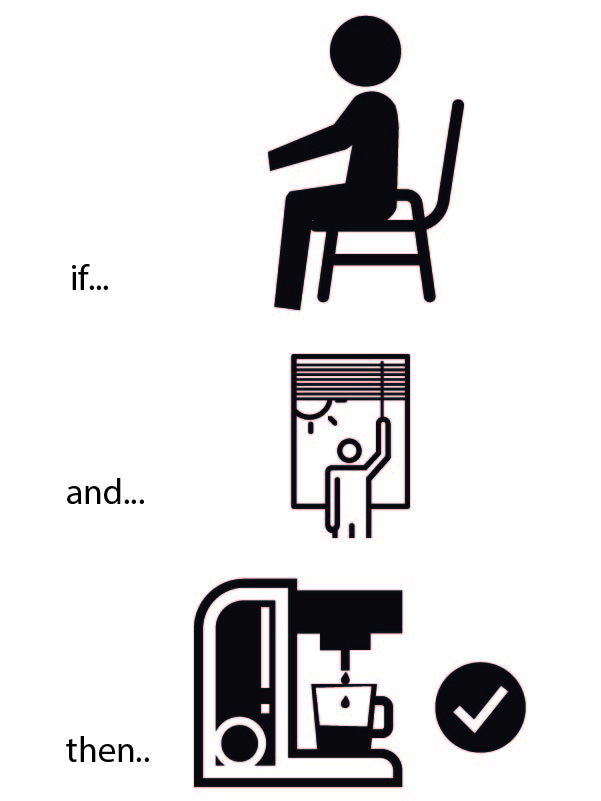

Final Prject
Assignment List
- Final Prject ☐
- Documentation ☐
- Final Working Model ☐
- Blueprints and Delivrables for open source production ☐
- To Conclude & Reflect ☐


The goal:
Create an office chair, that makes you coffee after you sit down first thing in the morning.
The method:
Create a desk chair, that senses a person, senses that it is morning, that it has not made coffee yet, and will make you coffee.
Why?
Because I am a coffee lover, and this is the first thing I do when I start working. Making a setup where a machines does my first daily action will both inspiring and filling each morning.
Integrating the digital aspect of production as not to require any aditional process is also magnetically intresting to me.
Main Title Stuff